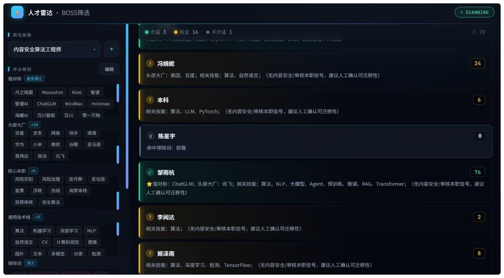

1
项目背景
HR 实习时我负责的是技术岗招聘。Boss 直聘每天会推送 30-100 个"推荐牛人"，HR 同事要逐个点开、看简历、判断是否合适。 我观察到一个具体场景：
一个 HR 一天要看 100+ 个候选人，平均每个 3-5 分钟。一天下来 6-8 小时就在翻 Boss，眼睛酸、心情也烦。 多数情况是重复劳动——同一个画像的岗位，昨天筛的和今天筛的标准其实差不多。
我问自己：能不能让工具先按画像初筛一遍，HR 只看"合适"的？
给 HR 同事用的人才雷达。配置岗位画像，工具自动按"强对标 / 大厂 / 核心 / 加分"四档评分，20 人 5 分钟筛完，HR 只需点开"合适"那几个人看。
HR 实习时我负责的是技术岗招聘。Boss 直聘每天会推送 30-100 个"推荐牛人"，HR 同事要逐个点开、看简历、判断是否合适。 我观察到一个具体场景：
一个 HR 一天要看 100+ 个候选人，平均每个 3-5 分钟。一天下来 6-8 小时就在翻 Boss，眼睛酸、心情也烦。 多数情况是重复劳动——同一个画像的岗位，昨天筛的和今天筛的标准其实差不多。
我问自己：能不能让工具先按画像初筛一遍，HR 只看"合适"的？
工具的形态是一个 "工作台"：左侧配置岗位画像，右侧实时显示候选人评分。 HR 只需要做两件事：① 选画像 ② 看"合适"列表。

把 HR 脑子里的判断逻辑显式写成 4 档规则，每档都有明确分数：
Boss 把简历详情用 canvas 渲染，HTML 里没有文字。
我用视觉模型截图识别：把简历详情截成图，调 StepFun 的 step-1o-turbo-vision 模型识别成文字，再丢给评分函数。
关键约束（也是踩过的坑）：必须用"视觉模型"，不能用"推理模型"—— 推理模型会先思考再输出，简历图越复杂思考越久，无 max_tokens 封顶时极易超时。
设计原则：严格只用 CDP 的 DOM 域（读页面结构）和 Input 域（鼠标/键盘），绝不执行页面 JS——这是抗反爬的核心约束。
这是工具的灵魂——把"HR 脑子里的判断逻辑"翻译成可计算的代码。
function scoreCandidate(text) {
const hit = (kw) => text.includes(kw);
// 1) 排除项：命中任何排除词直接判"不合适"
const excludedHits = PROFILE.exclude.filter(hit);
if (excludedHits.length > 0) {
return { category: '不合适', score: 0, reason: `命中排除词：${excludedHits.join('、')}` };
}
// 2) 必备项：缺任何必备项也直接"不合适"
const mustMissing = (PROFILE.mustHave || []).filter((kw) => !hit(kw));
if (mustMissing.length > 0) {
return { category: '不合适', score: 0, reason: `缺少必备项：${mustMissing.join('、')}` };
}
// 3) 四档计分
const peercoHits = (PROFILE.peerco || []).filter(hit); // 强对标 AI 公司
const bigcoHits = (PROFILE.bigco || []).filter(hit); // 头部大厂
const coreHits = (PROFILE.core || []).filter(hit); // 核心本职
const bonusHits = (PROFILE.bonus || []).filter(hit); // 加分项
const score =
PROFILE.baseScore +
peercoHits.length * (PROFILE.peercoScore || 0) +
bigcoHits.length * (PROFILE.bigcoScore || 0) +
coreHits.length * PROFILE.coreScore +
bonusHits.length * PROFILE.bonusScore;
// 4) 分档：强对标直接通过 / 达分过线 / 待定 / 不合适
let category;
if (peercoHits.length > 0) {
category = '合适';
} else if (score >= PROFILE.suitableScore) {
category = '合适';
} else if (score >= PROFILE.pendingScore) {
category = '待定';
} else {
category = '不合适';
}
return { category, score, reason: '...' };
}HR 不该写代码，但 HR 应该能读懂画像配置。我把它设计成 JSON，每个字段都有注释说明含义。
{
"id": "agent-backend",
"name": "Agent 研发工程师",
"strong": ["Agent", "智能体", "大模型", "RAG", "Function Call"],
"strongScore": 10,
"bigco": ["阿里巴巴", "腾讯", "字节跳动", "微软", "谷歌"],
"bigcoScore": 10,
"core": ["后端", "服务端", "分布式", "高并发", "微服务"],
"coreScore": 5,
"bonus": ["Golang", "Java", "Python", "Kubernetes", "Docker"],
"bonusScore": 2,
"exclude": ["测试工程师", "运维工程师", "前端工程师", "产品经理"]
}我和 HR 同事坐了一下午，看她怎么筛简历。她一边点一边说："这人是字节的、看后端、做过 Go、能用……"。 我把这些"自言自语"记下来，整理成 4 档规则。AI 帮不了"业务访谈"，但能帮我"把访谈结果翻译成代码"。
给 Claude 的第一版需求是：
--remote-debugging-port=9222 启动 Chrome，通过 CDP 连接第一版上线后，我让 HR 同事用了 3 天。她提了 3 个关键反馈：
关键学习：AI 搭出来的是"能跑的"，HR 用过之后才知道"好用的"长什么样。把"能用"变成"好用"的迭代，是产品经理该干的活。
第一次 OCR 用的是 step-3.7-flash（推理模型），每个候选人识别要 30 秒+，20 个人要 10 分钟。
一开始以为是网络问题，反复调超时。后面才意识到：推理模型会先生成大段思考，简历图越复杂越慢。
修正：换成 step-1o-turbo-vision（纯视觉模型）+ 设 max_tokens=1500 封顶输出。亚秒级返回，20 个人 5 分钟搞定。
第一版筛选时，发现有些候选人的"加分项"是其他人的——
详情面板里有"其他名校毕业 / 推荐相似牛人"模块，列的是别人简历；我的工具把它们当成"本人简历"匹配关键词。
修正：用"经历概览"作为锚点裁文本，只保留本人简历段。
第一版我把画像配置藏在 JSON 文件里，HR 要改关键词得找我。
结果她宁愿手筛也不想来问我。
修正：做一个 Web 工作台，所有配置可视化（标签云 + 分数滑块），HR 自己就能调。